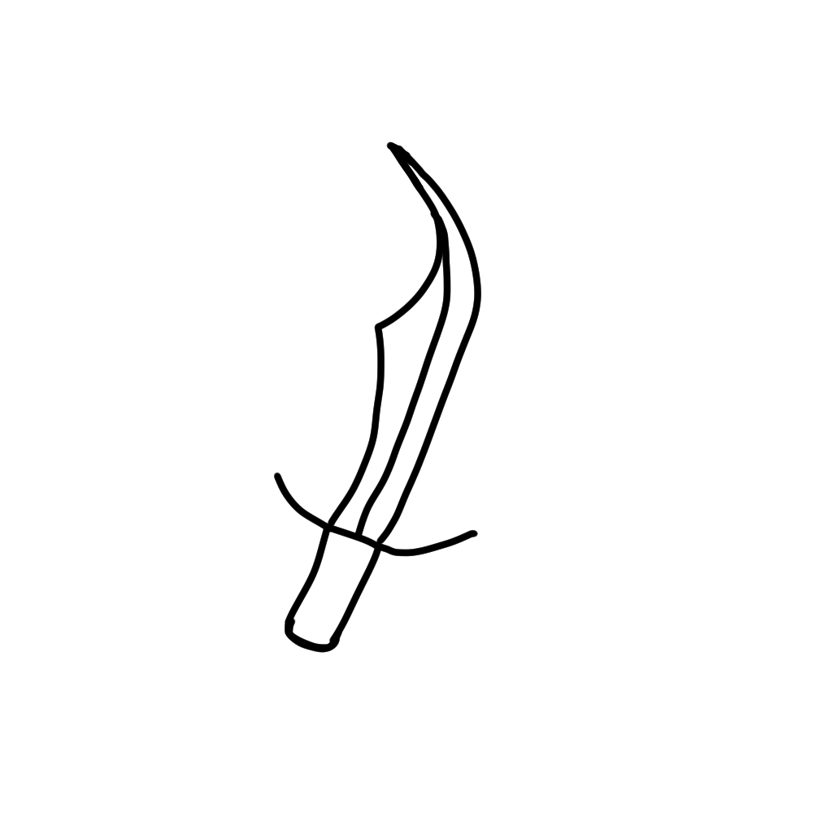
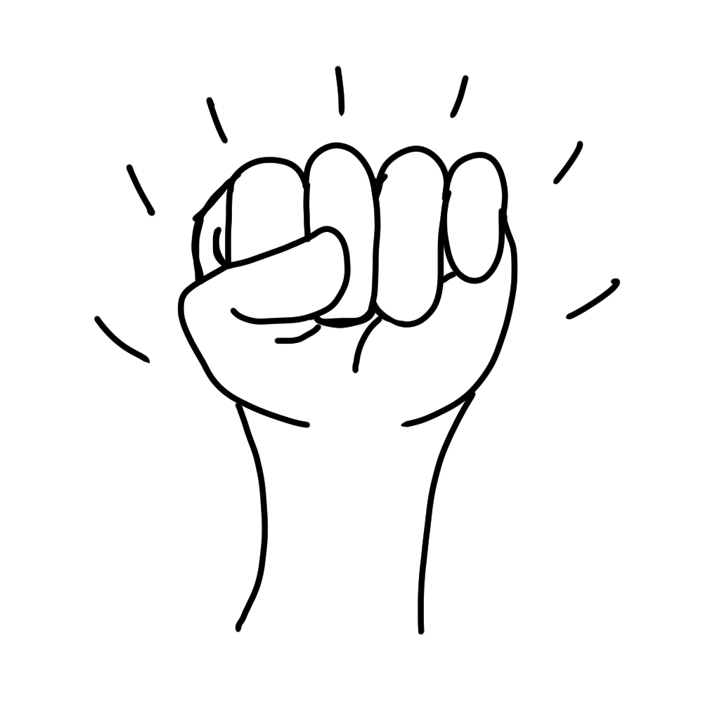
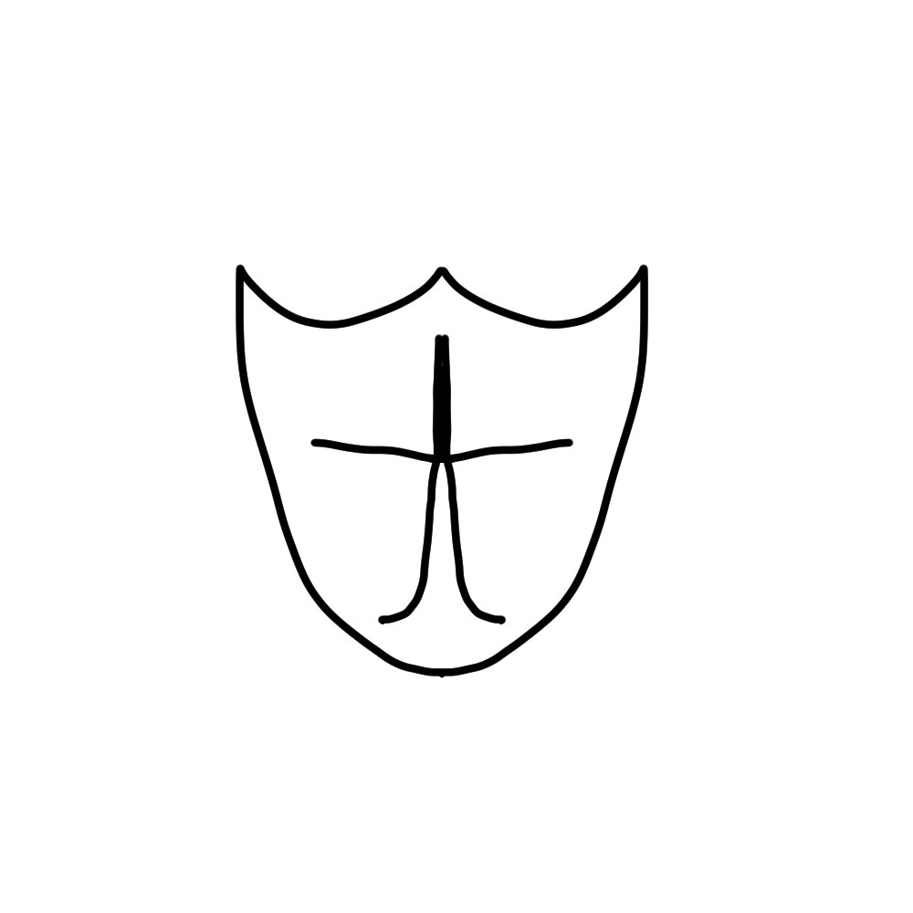
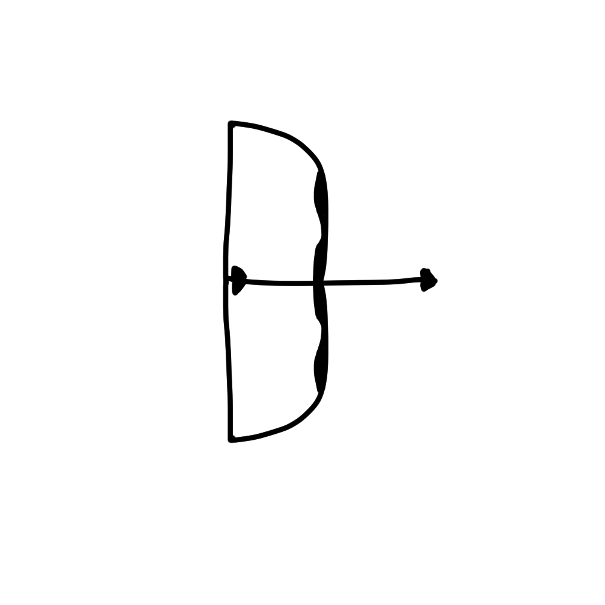
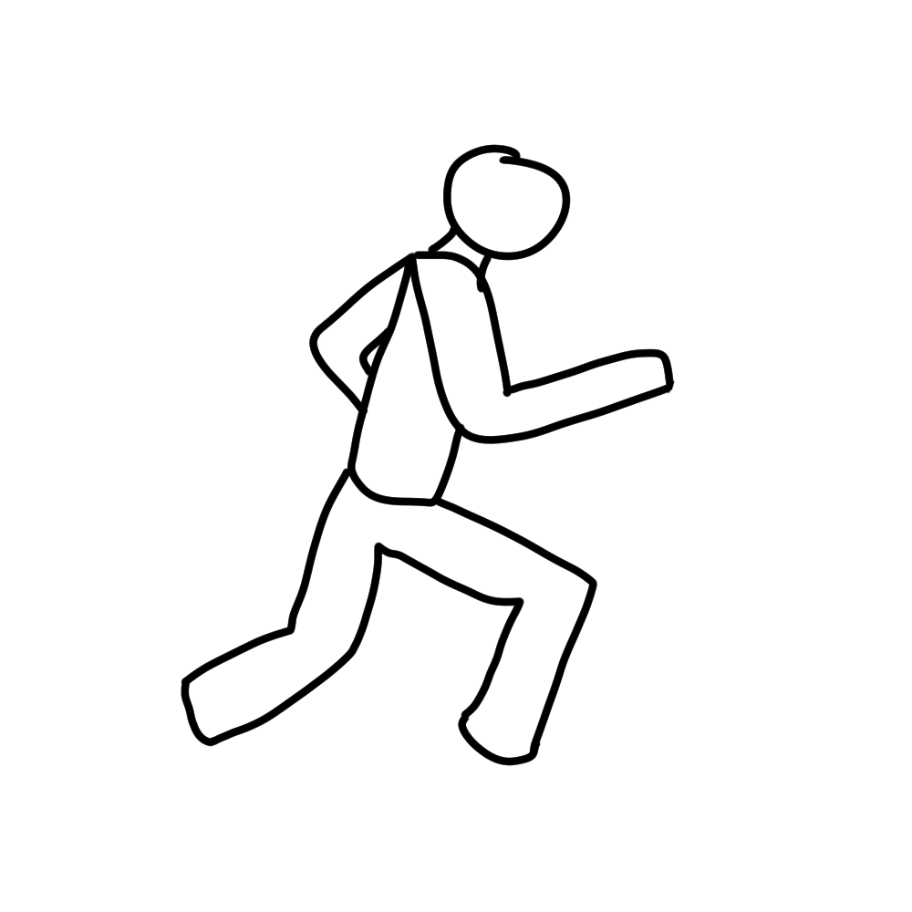
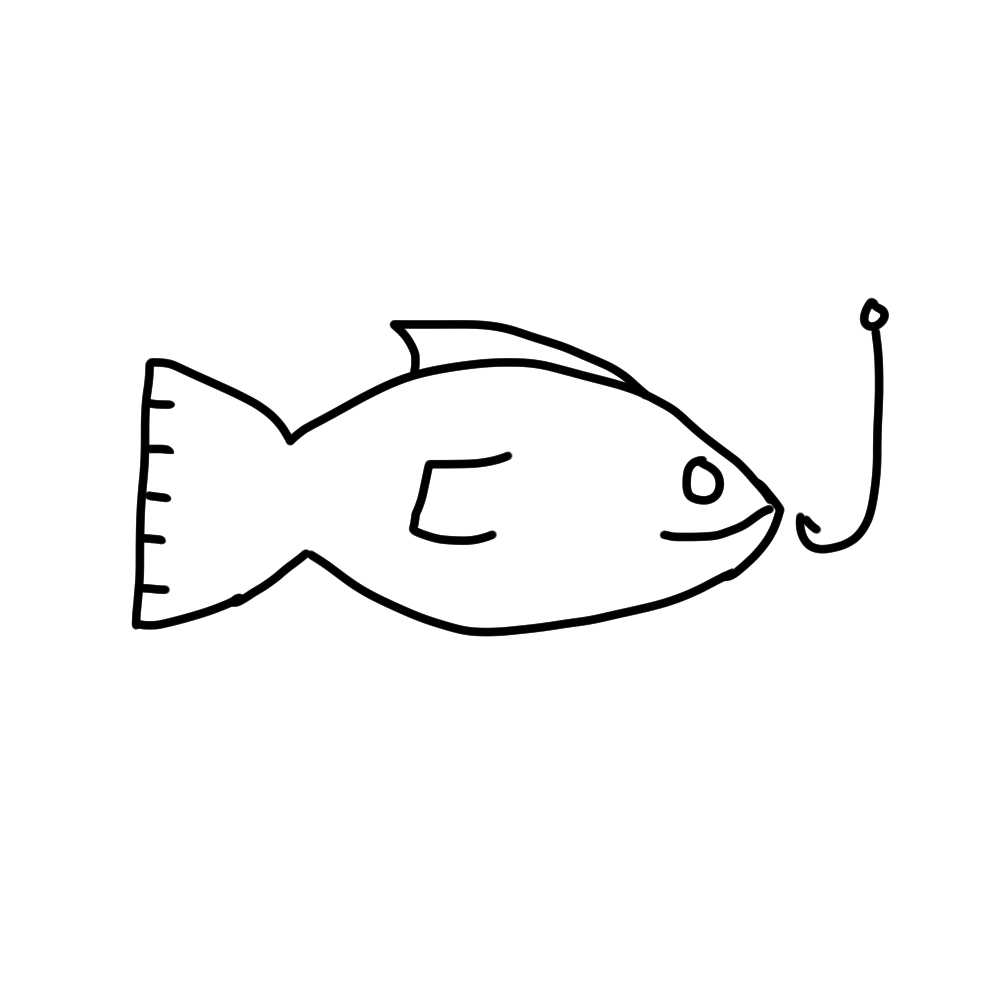
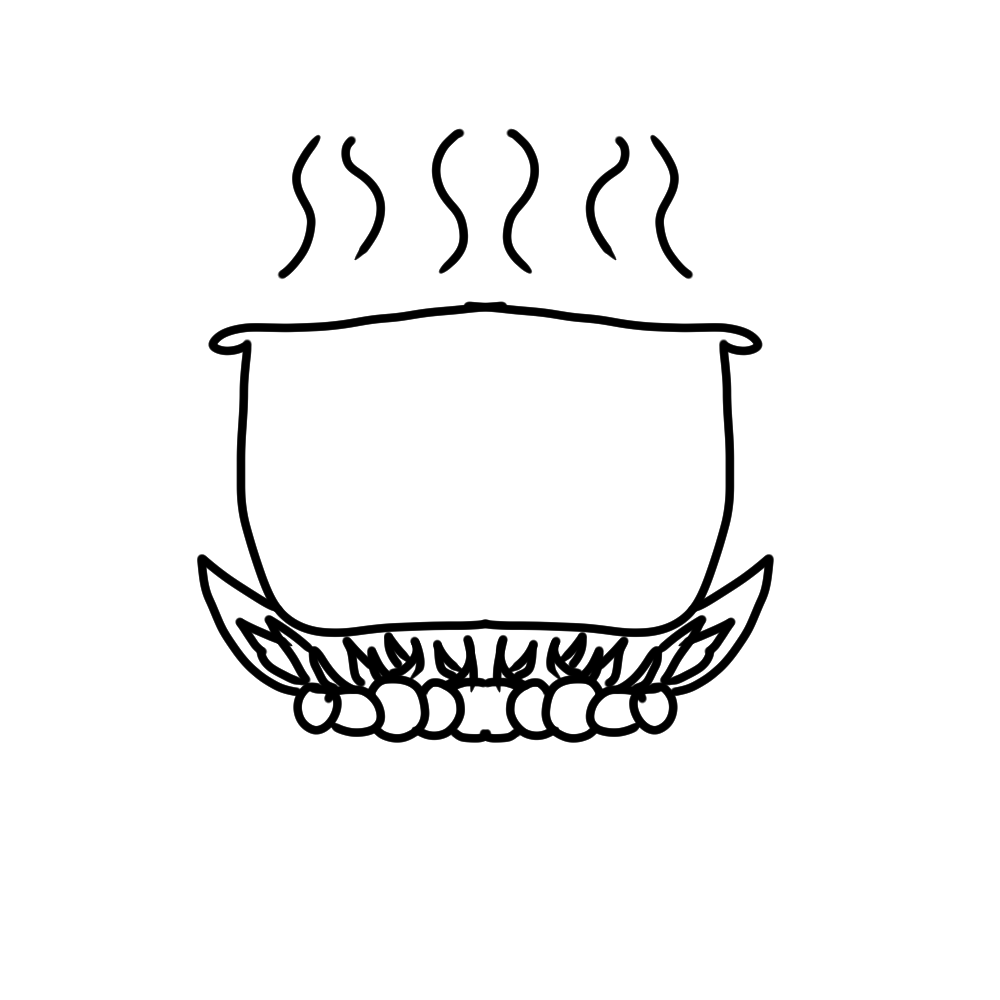
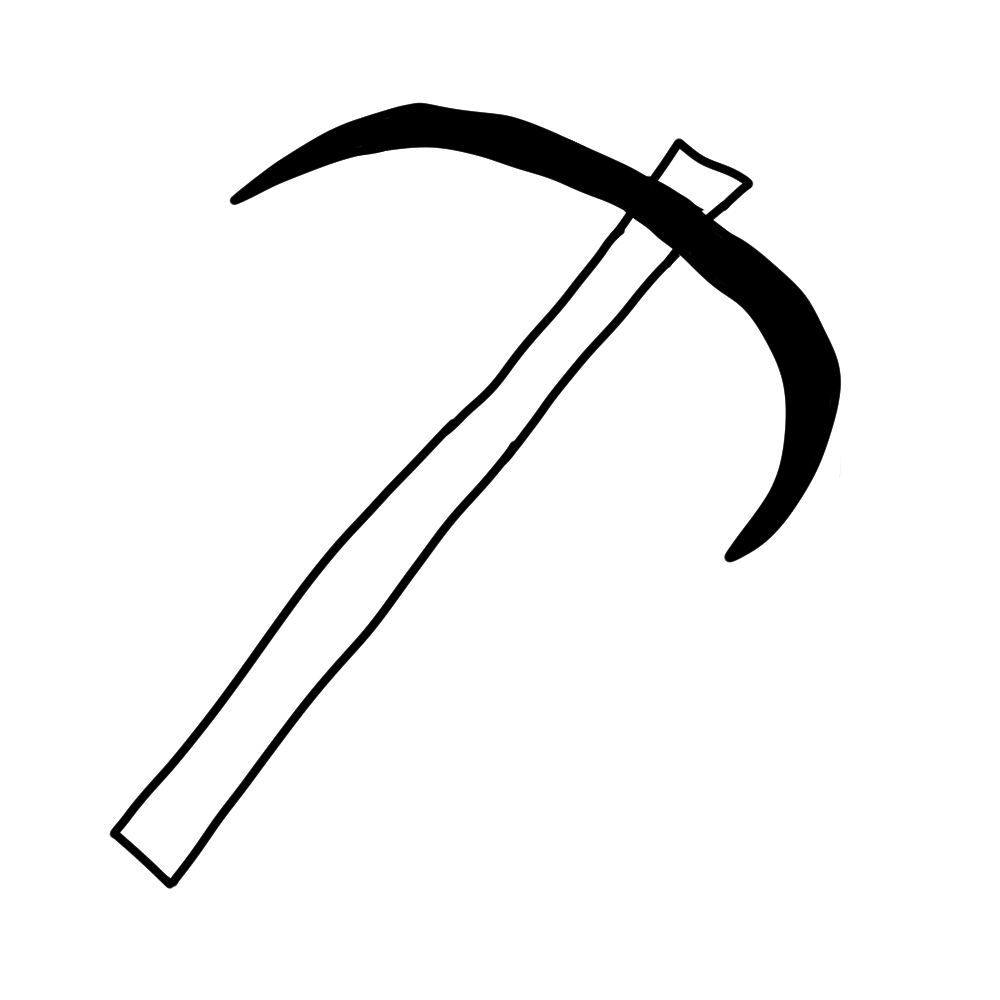
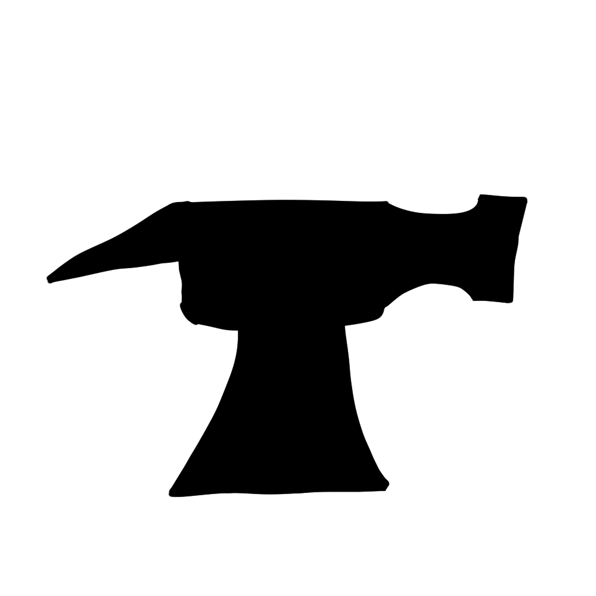
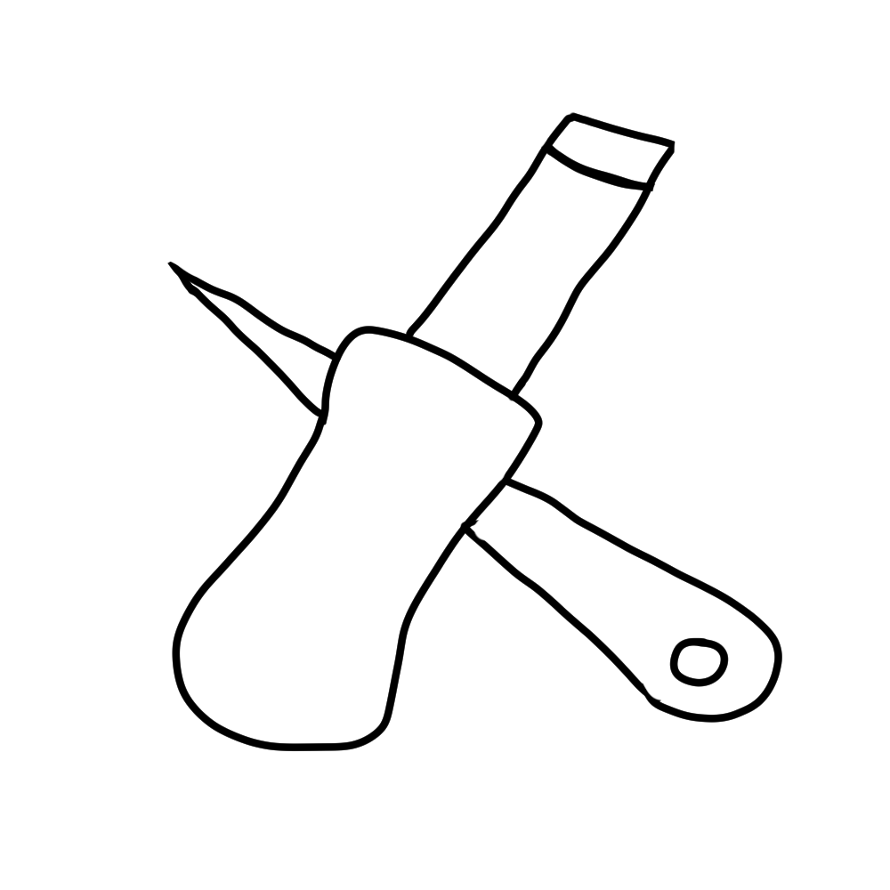

Skills
Vitality
This skill determins the amount of heath you have
Attack
Attack determines how often you will be able to attack a monster and it also determins what tier weapon you will be able to weild.
Strength 
Strength determins how strong attacks will be, this increates the max hit potential.
Defence 
Defence determines what tier armour will be wearable and it increases your base armour rating.
Magic 
Magic is a two-fer, It increases your you max hit just like strength but it is also like attack but with magic weapons
Ranged
Identical to magic but with ranged weapons
Agility
Agility increases your dodge chance and it allows for the use of short cuts and ofther movements that need excelent athletisim.
Summoning
A Magic-esk sub class that uses items found in the world and mana to conjour beasts, spirits, and more to aid countless activities.
Fishing
Fishing is a relaxing time by the lake were different tyles of aquatic animals can be caught.
Cooking
Cooking is a skill that allows you to cook the raw foods found or caught in the land of Brylithia
Minning
Minning with a pickaxe to abtain ores which can be used while smithing to make countless useful items.
Smithing
Use the ores found from minning and heat, treat, and smith them into items which can be used in your day to day lives.
Crafting
Crafting deals with leathers, jewelry, glass, wood, and more to create items needed and used by players. Crafting and smithing go hand and hand together in order to create armour and weapons.
Hunter
Hunter tests the ability to track and capture animals and monsters that can be used as pets, resources, food, and more.
Quests
Quests will be found from NPC's all across the land of Brylithia. Some quests will give expirence to specific skills and some may open a while new world with countless new areas to explore. Some items must have specific quests completed before said item is useable.
Trials of Bryla
Complete a series of tasks that range from simple to hard. Some say these trials can last an eternity, some say they never began. Uncover the truth behind the meaning of these trials to see if greatness awaits.
Chicken or the Egg
Aquire 3 eggs and make an omlete and eat it. *omlete recipe needed*
Scorched Earth
Tackle the inferno, a land of pure heat and fire and defeat The Molten King.
Lands Divide
The Aincient lands have been long forgten by many. With the knowledge you have gained from your past expeditions, find the casue of the fall of these ruins as well as the casue of the